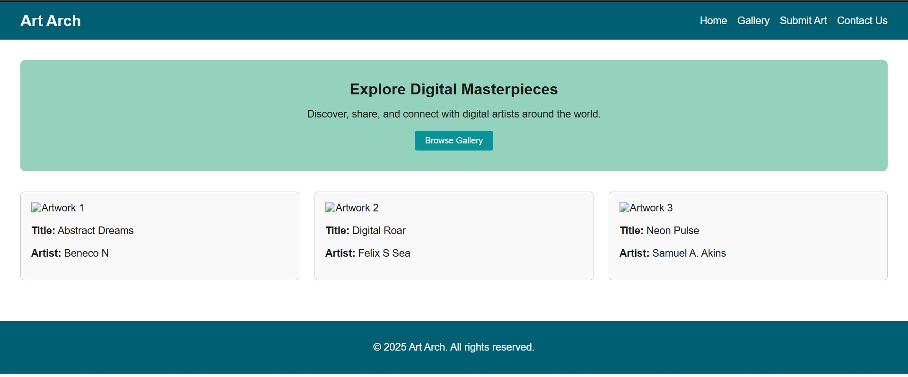
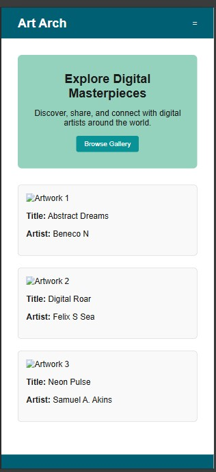

Site Name
ArtArch is an online art gallery dedicated to showcasing digital artwork from both new and established artists. The name reflects a blend of "art" and "Arch" — representing a diverse, inclusive space for creativity.
Where Digital Art Finds a Home
ArtArch is an online art gallery dedicated to showcasing digital artwork from both new and established artists. The name reflects a blend of "art" and "Arch" — representing a diverse, inclusive space for creativity.
The primary purpose of ArtArch is to provide a visually engaging platform for discovering, browsing, and appreciating digital artwork. It also supports artists by allowing portfolio submissions and offering visibility to potential buyers, galleries, and fans.
Wide View
Mobile view
